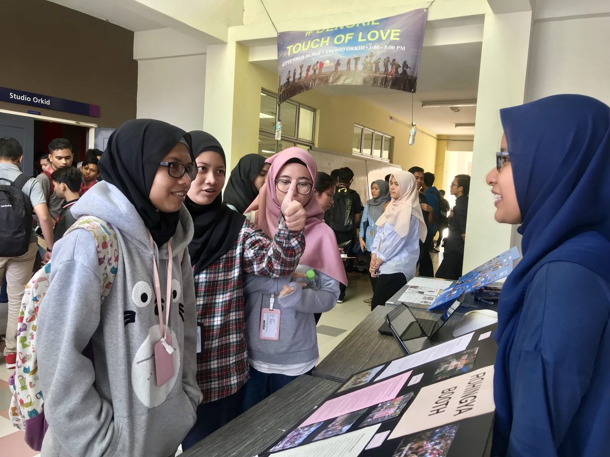
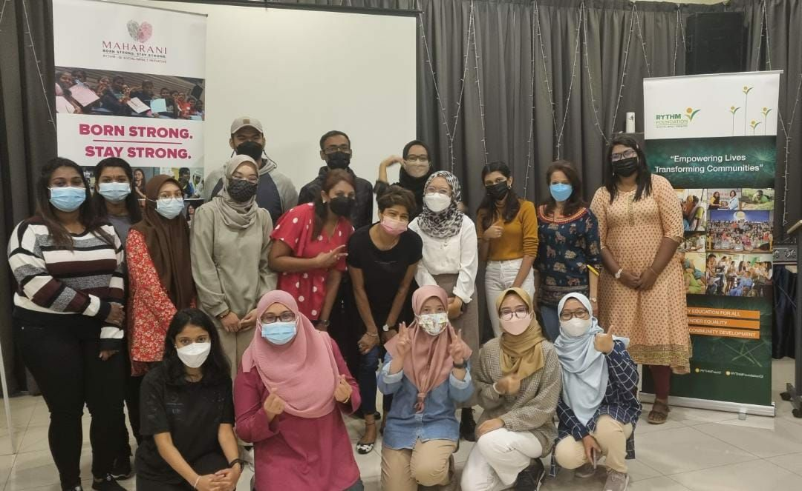

I joined Outward Bound School Malaysia in 2016 for 5 days 4 nights in Lumut, Perak.
I joined Youth Adventure Challenge where I experienced all outdoor activities like rock and wall climbing,
rafting in open sea, camping, jungle tracking and more. It was one of the activities
that greatly affected my physical and mental endurance.

While I was studying at the foundation level, my group and I held an awareness campaign with UiTM Dengkil students
about the Rohingya community. We received more than 100 participants who participated in the program
activities such as talks, Q&A and open booth.

On January 2022, I started to involve in volunteering program.
My first volunteering program experience was with MAHARANI program where
the aim is to empower young girl from B40 background. From that program,
I met many people with different background and I can learn new things and experiences through joining volunteering.